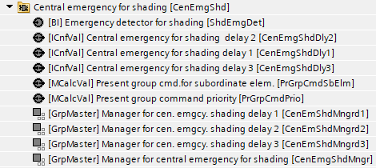
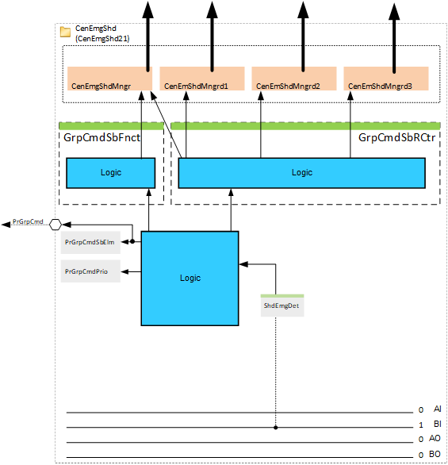
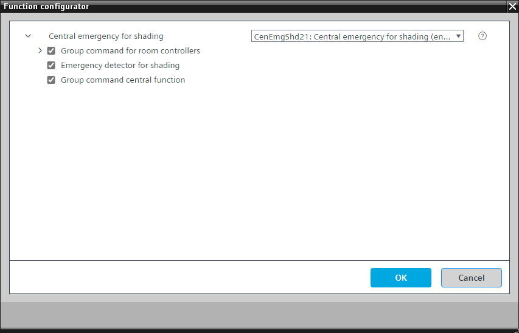
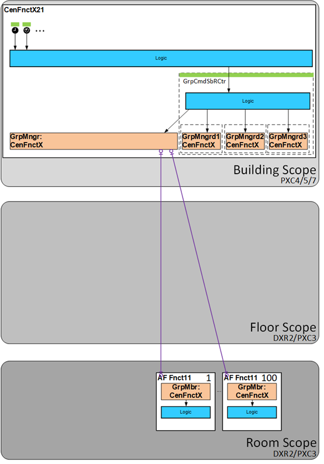

[CenEmgShd21] Central emergency for shading
Program block, name / node subtype: [CenEmgShd21] Central emergency for shading
Library hierarchy: Coordination
Family: CenEmgShd
Project tree | Diagram |
|---|---|
 |  |
Configurator


Program blocks are stored in the library without I/Os. Use the auto-create and auto-connect functions to create I/Os and/or to connect them to the interface blocks, e.g., R_A, CMD_B. Alternatively, take the I/Os from the folder containing the predefined I/Os in the library and/or from the plant and connect them to the interface blocks.
Function
Central emergency for shading products
Mandatory elements
Name | Description | Type | Alarm / Notification class | Trend / Type | |
|---|---|---|---|---|---|
PrGrpCmdSbElm | Present group command for subordinate elements | MCalcVal: Multistate calculated value | N/A | Yes, 4 | |
PrGrpCmdPrio | Present group command priority | MCalcVal: Multistate calculated value | N/A | Yes, 4 | |
CenEmgShdMngr | Manager for central emergency for shading | GrpMaster: Group manager | N/A | N/A | |
CenEmgShdMngrd1 | Manager for central emergency for shading delay 1 | GrpMaster: Group manager | N/A | N/A | |
CenEmgShdMngrd2 | Manager for central emergency for shading delay 2 | GrpMaster: Group manager | N/A | N/A | |
CenEmgShdMngrd3 | Manager for central emergency for shading delay 3 | GrpMaster: Group manager | N/A | N/A | |
Optional elements
Name | Description | Type | Alarm / Notification class | Trend / Type | |
|---|---|---|---|---|---|
ShdEmgDet | Emergency detector for shading | BI: Binary input | Yes, 5 | No | |
Further options
Description |
|---|
Group command for subordinate central functions |
Group command for subordinate room controllers |
Group command for sub-elements delay 1 Elements that belong to this option: Central operating mode delay 1 | ICnfVal: Integer configuration value |
Group command for sub-elements delay 2 Elements that belong to this option: Central operating mode delay 2 | ICnfVal: Integer configuration value |
Group command for sub-elements delay 3 Elements that belong to this option: Central operating mode delay 3 | ICnfVal: Integer configuration value |
Further information
The following diagram provides an overview of the options Group command for subordinate central functions (GrpCmdSbFnct) and Group command for subordinate room controllers (GrpCmdSbRCtr):

It is unlikely to have both options in parallel. There are two possible topologies:
Cascading of the central functions is necessary. | Cascading of the central functions is not necessary. |
|  |